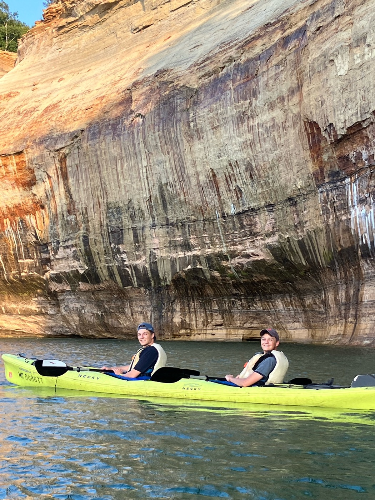
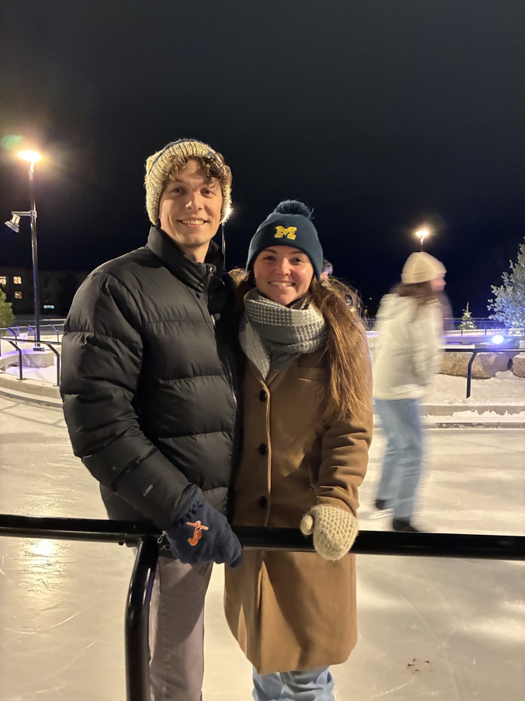

// machine learning · materials science
PhD researcher in Chemical Engineering & Scientific Computing at the University of Michigan, building machine-learned interatomic potentials and ML-accelerated search algorithms to discover and design new materials.
0
papers in progress / submitted
0
labs & companies collaborated with
0
expected PhD completion
·Off the Clock

